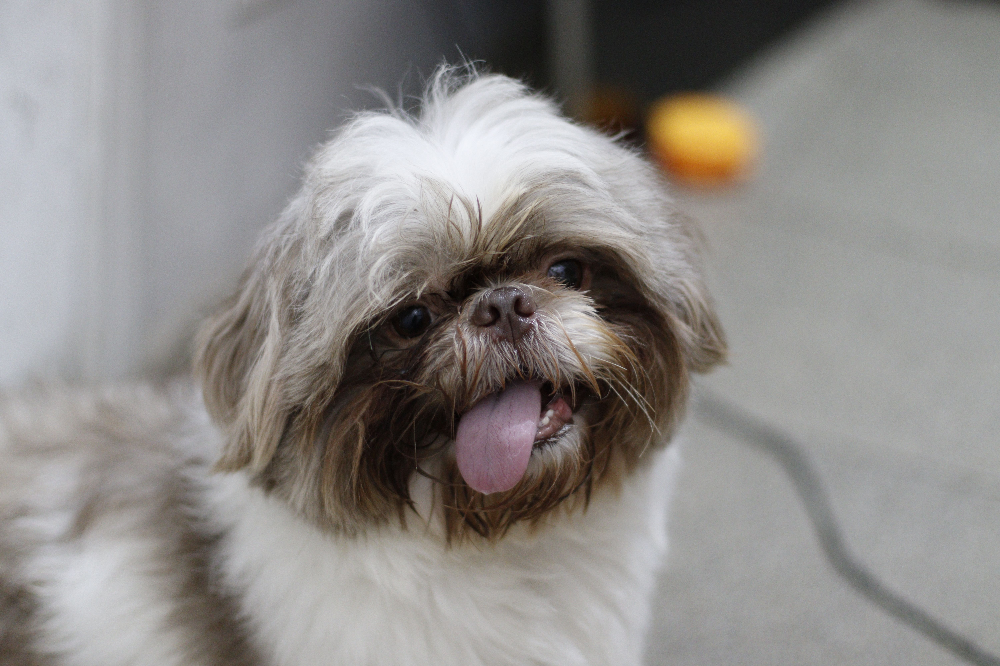
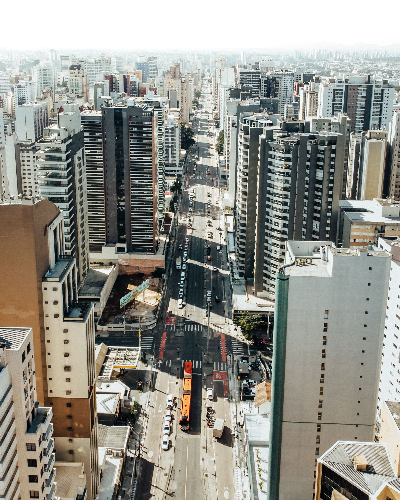
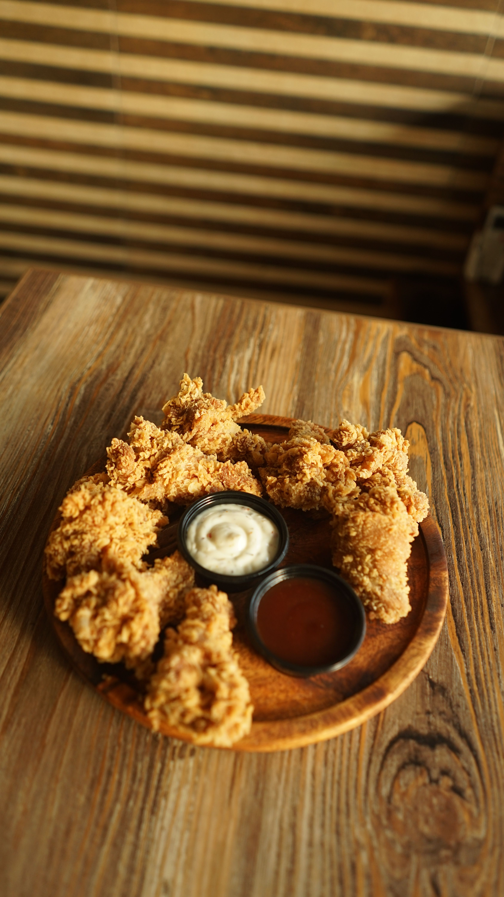
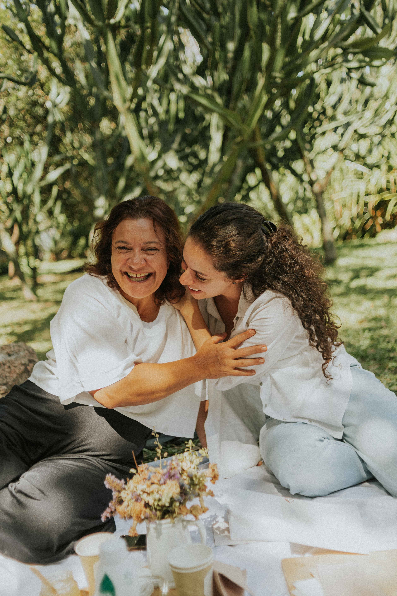

Galeria
Álbuns
Ver todos
Viagens
6 itens

Tobias
22 itens
Selfies
15 itens

Cidades
18 itens
Natureza
42 itens

Comidas
26 itens
Pessoas
Ver todos
Ana
Leo
Tobias

Mãe
+9
Mais
Bibliotecas
Privado
58 fotos, 4 vídeos
Capturas
203 imagens
Melhores Momentos
Ver todos
128
curtidas
96
curtidas
75
curtidas
70
curtidas